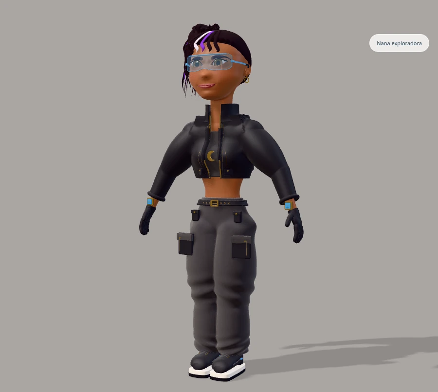
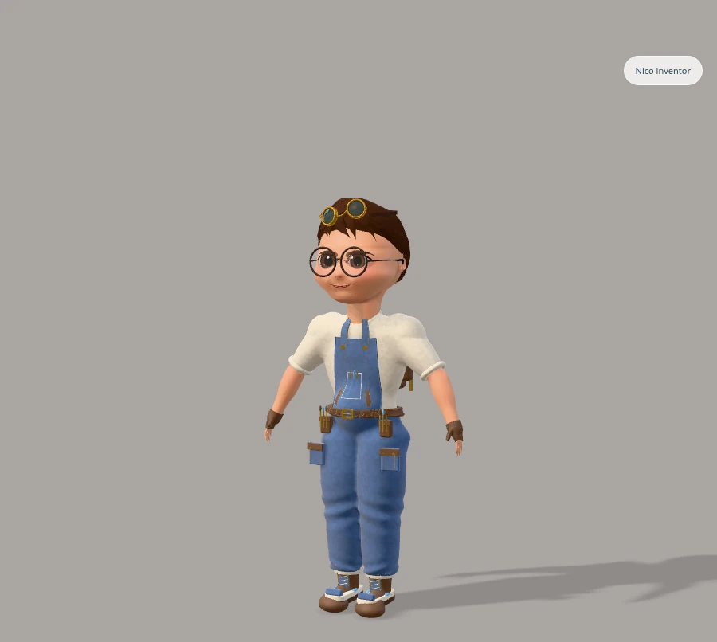
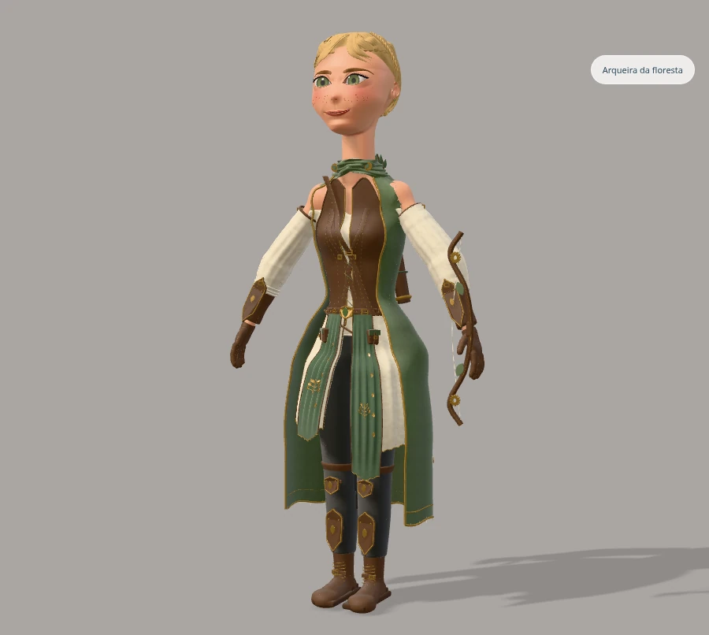
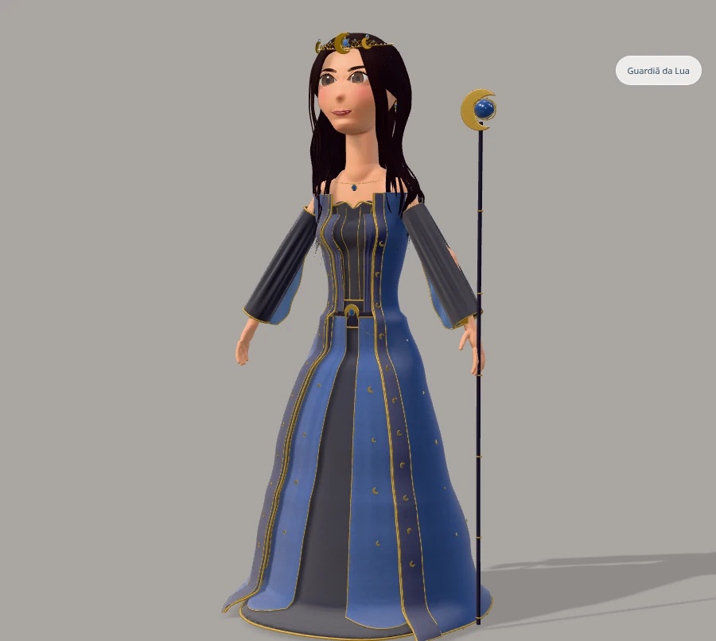
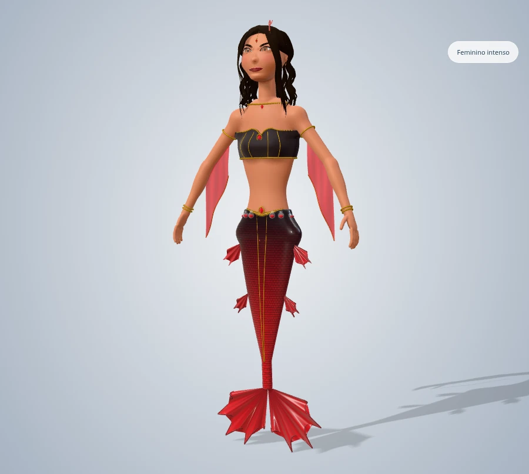
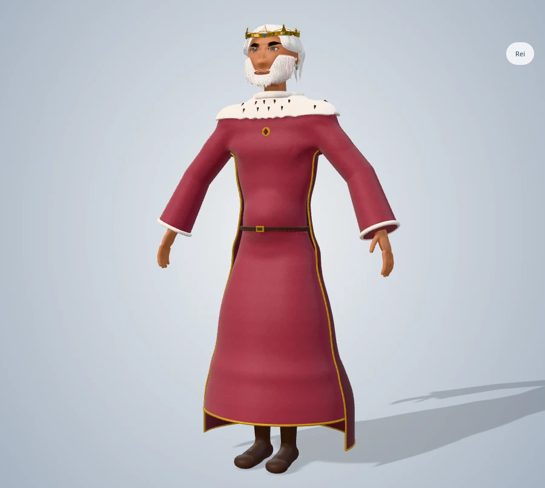

Abrir o ateliê · Rodada anteriorAcabamento dos cabelos
Correção compartilhada dos penteados existentes: menor relevo das mechas, textura direcional discreta e reflexos suavizados. Seis exemplos em close e com corpo inteiro no editor. Rostos, proporções, roupas, acessórios e iluminação preservados. As imagens são capturas reais; a comparação em close usa câmeras idênticas.
Nana exploradora
Corpo inteiro — acabamento atual

Vista atual no editor com corpo inteiroNico inventor
Corpo inteiro — acabamento atual

Vista atual no editor com corpo inteiroArqueira da floresta
Corpo inteiro — acabamento atual

Vista atual no editor com corpo inteiroGuardiã da Lua
Corpo inteiro — acabamento atual

Vista atual no editor com corpo inteiroFeminino intenso
Corpo inteiro — acabamento atual

Vista atual no editor com corpo inteiroRei
Corpo inteiro — acabamento atual

Vista atual no editor com corpo inteiro